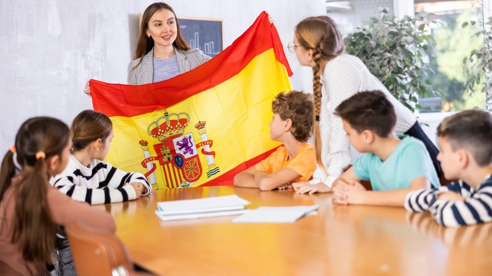
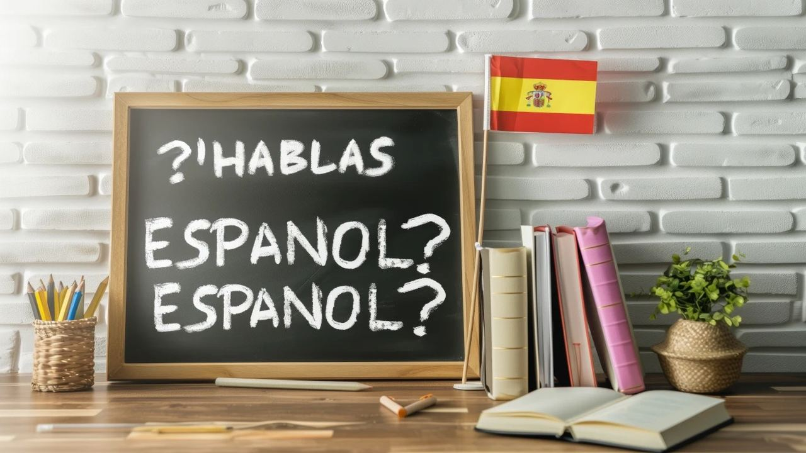

Living in Spain · Families
How Does the Education System Work in Spain?
 By Aleksandra Kobus · · updated · 5 min read
By Aleksandra Kobus · · updated · 5 min read

In short: School is compulsory in Spain from 6 to 16. Most children start at 3 in free public infant classes. After 6 years of primary school and 4 years of secondary (ESO), students choose a 2-year Bachillerato or vocational training (FP). Public schools are free, concertado schools charge small fees and private and international schools charge full fees. To enrol you need your padrón certificate, birth certificate, passports or NIE and school reports, and you can join during the year.
For families moving to Spain, the first question is often about school. When does it start? What is free? Will my child cope with the language? This guide walks through every stage from nursery to university, the types of school you can choose and how to enrol a child after you arrive.
The stages at a glance
Spain's school system is set nationally by the education law (currently the LOMLOE of 2020), and each region runs its own schools and adds its own content.
| Stage | Ages | Compulsory? |
|---|---|---|
| Educación Infantil, 1st cycle (nursery) | 0–3 | No |
| Educación Infantil, 2nd cycle | 3–6 | No, but free and almost universal |
| Educación Primaria | 6–12 | Yes |
| ESO (lower secondary) | 12–16 | Yes |
| Bachillerato or vocational FP | 16–18 | No |
| University or higher FP | 18+ | No |
Children are placed by the calendar year they were born, not by their birthday, so all children born in the same year are in the same class.
Nursery and infant school (0–6)
The first cycle (0–3) is the guardería or escuela infantil. Public places are limited and the cost often depends on family income; private nurseries are easier to find and offer flexible hours. In the Valencian Community, the 2–3-year-old class is now free in public and many publicly funded centres.
The second cycle (3–6) is free in public schools and usually takes place in the same building as the primary school. It is not compulsory, but nearly every child attends. Starting here is the easiest way for a young child to pick up Spanish.
Primary school (6–12)
Six years of compulsory primary education covering Spanish, maths, natural and social sciences, English, art, music and physical education. Regions with a second official language teach it too: Valencian in the Valencian Community, but not in Andalusia or Murcia.
Children of this age usually learn the language fastest, so moving during primary school is often the smoothest time.
Secondary school, ESO (12–16)
The Educación Secundaria Obligatoria lasts four years and ends with the ESO certificate (Graduado en ESO), needed for any further study. Teenagers who arrive without Spanish often get extra language support, but the step is harder, so many families with children of this age consider an international school.
After 16: Bachillerato or vocational training
Bachillerato is a two-year academic course with a chosen branch: sciences, humanities and social sciences, arts, or a general option. At the end, students sit the university entrance exam, now called the PAU (it was known as EBAU or EvAU until 2024).
Formación Profesional (FP) is the practical route. There is a basic level from 15, Grado Medio after ESO and Grado Superior after Bachillerato or Grado Medio. Courses usually last two years and include work placements in fields such as hospitality, IT, health care, administration and mechanics. A Grado Superior also gives access to university.
University
Degrees follow the European model: a Grado (usually four years), a Máster (one or two years) and a Doctorado. Public universities charge fees set by each region, usually a few hundred to around two thousand euros a year for EU students, far less than in the UK or the US. In Andalusia, credits passed at the first attempt are almost free for the following year. The Costa Blanca has the University of Alicante and Miguel Hernández University in Elche; the Costa del Sol has the University of Málaga. Most courses are in Spanish, with a growing number in English.
Public, concertado, private or international?
- Public (público): free, run by the region. Places go by catchment area, so your address matters. Families pay for books, materials, lunches and trips.
- Concertado: privately run, often religious, but state funded. Tuition is free in principle, though most ask for a voluntary monthly contribution.
- Private (privado): full fees, Spanish curriculum, often with more English.
- International: British, American, German, Scandinavian or IB curriculum, mainly in English. Fees typically range from about €6,000 to over €15,000 a year depending on age and school. Both coasts have many, especially around Alicante, Jávea and Marbella.
The school year runs from early-to-mid September to around 20 June. Many public schools in the Valencian Community teach a continuous day, roughly 9:00 to 14:00, with optional afternoon activities.
How to enrol your child

For a public or concertado school you usually need:
- Padrón certificate (certificado de empadronamiento) showing your address. Register at the town hall first.
- Birth certificate of the child, translated into Spanish if needed (an EU multilingual form avoids translation).
- Passports or NIE of the child and parents.
- Health card or proof of health cover, and the vaccination record.
- School reports from previous years. For Bachillerato, a foreign secondary diploma must be officially recognised (homologación).
The main admission round is in spring (usually May for infant and primary, June for secondary) and is mostly done online. If you arrive during the year, you can still apply at any time: the local schooling office (comisión de escolarización) or the town hall will assign a place at a school with free spaces.
Language and settling in

Children under ten usually understand Spanish within a few months and speak it within a year. Older children need more time, and extra classes or a tutor help. In the Valencian Community families can choose Spanish or Valencian as the main language of teaching, and in many towns of southern Alicante Spanish is the norm. Visiting schools before you buy is a good idea, because the catchment area of a home decides which public school your child can join.
Frequently asked questions
At what age do children start school in Spain?
School is compulsory from 6, but almost all children start at 3 in free infant classes in public schools.
Is school free in Spain for foreign children?
Yes. Public schools are free for every child living in Spain, whatever their nationality. Parents pay for books, materials, meals and trips.
Can I enrol my child in the middle of the school year?
Yes. Outside the spring admission round, the local schooling office or town hall assigns a place at a school with free spaces.
Do schools in Spain teach in English?
Public schools teach in Spanish (and Valencian in the Valencian Community), with English as a subject. International schools teach mainly in English.
Choose the school, then the home
For families, the school often decides the area, and the area decides the home. If you are moving with children, tell us their ages and the type of school you want. We will suggest areas and homes within easy reach. Our guide to moving to Spain step by step covers the rest of the paperwork.
Sources: BOE – Organic Law 3/2020 (LOMLOE) · Ministerio de Educación – recognition of foreign qualifications